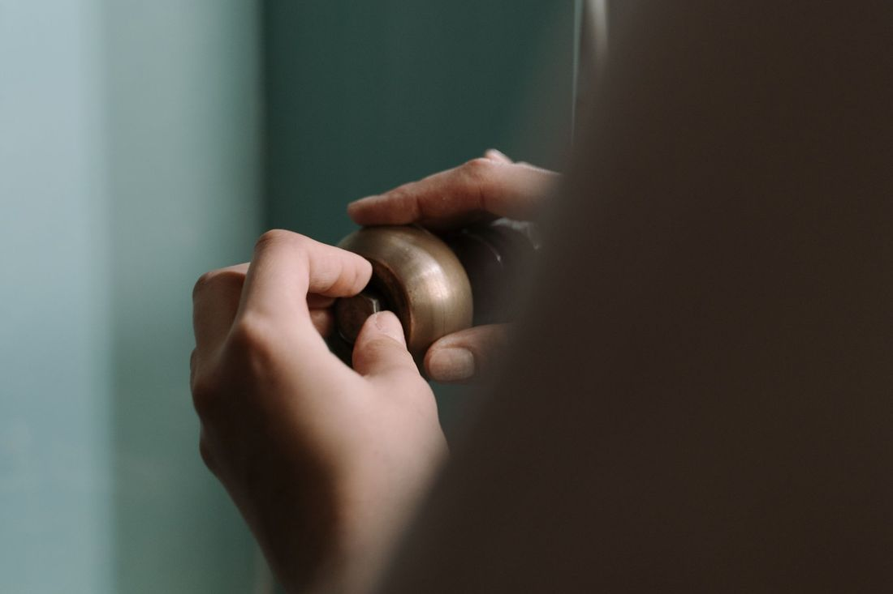
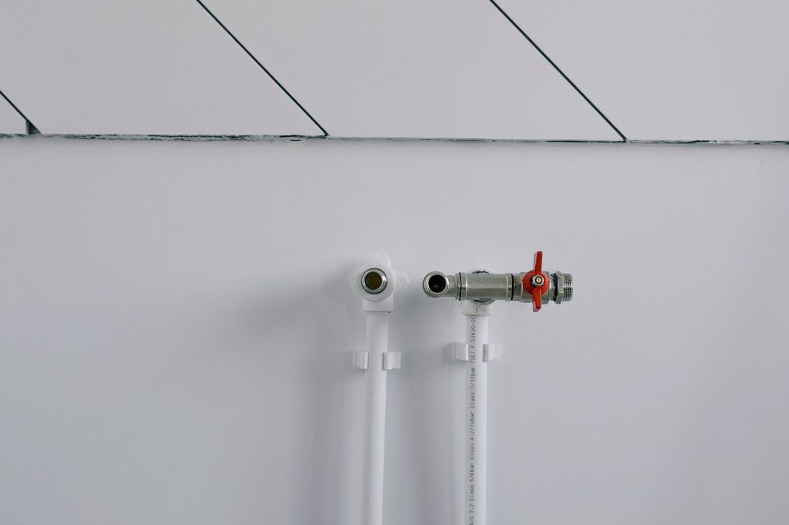

Ataşehir su tesisatı ve kaçak tespiti
Duvarda leke, faturada artış, gider tıkalı mı? Sorunu cihazla bulur, gereksiz kırmadan çözmeye çalışırız. Arızayı yazın, ustamız dönüş yapsın.
Servis çağırBelirtiyi seçin, olası sebebi ve ilk adımı görün
Sorun türü ve belirti seçin.
1Sorun türü
2Belirti
Servis talebi
WhatsApp mesajı olarak Marmara Yapı Tesisat'a gider.
Kaçak testi
Duvarda leke görünmese bile fatura yükselişi gizli kaçağın işareti olabilir. Su sayacınız üzerinden yapabileceğiniz basit bir test, ustaya g
Hizmetlerimiz
Dokunun, ayrıntısı açılsın.
Cihazla su kaçağı tespiti
Duvar ve zemin kırılmadan önce termal kamera ve akustik dinleme gibi cihazlarla kaçağın yeri belirlenir. Böylece yalnız gereken noktaya müdahale edilir.
Tıkanıklık ve kanal açma
Lavabo, gider ve ana hat tıkanıklıkları spiral ya da robotik kanal açma makinesiyle açılır. Hattın içi gerekirse kamerayla incelenir.
 Petek ve kalorifer tesisatı
Petek ve kalorifer tesisatı
Isınmayan ya da sızdıran petek, hava alan hat ve vana sorunları kontrol edilir. Petek sökme-takma ve boru bağlantı işleri yapılır.
 Banyo ve mutfak tesisat yenileme
Banyo ve mutfak tesisat yenileme
Eskiyen boruların yenilenmesi, banyo ve mutfak su-gider hatlarının yeniden çekilmesi. Fayans ve seramik öncesi tesisat hazırlığı da yapılır.
 Musluk, batarya ve rezervuar değişimi
Musluk, batarya ve rezervuar değişimi
Damlatan musluk, sızdıran batarya, sürekli akan ya da dolmayan rezervuar için conta, şamandıra ya da komple değişim yapılır.

Sıhhi tesisat arıza
Klozet, lavabo, duş teknesi ve evye bağlantılarındaki sızıntı, gevşeme ve su basıncı sorunları yerinde giderilir.

Kombi su bağlantısı
Kombinin su giriş, çıkış ve kalorifer hattı bağlantıları yapılır. Doğalgaz tarafı gerektiren işler yetkili kişilere bırakılır.
Su sayacı sonrası kaçak
Sayaç döndüğü hâlde su kullanmıyorsanız, kaçak sayaçtan sonraki hatta olabilir. Hat bölünerek test edilir, yeri bulunur.
 Rögar ve gider kokusu
Rögar ve gider kokusu
Gider ve rögardan gelen kötü koku; sifon, havalandırma ya da hat sorunundan olabilir. Sebep bulunur, koku kaynağında giderilir.
Hizmet bölgesi
Ataşehir ve çevresi.
Adres ve saatler
Kayışdağı, Büyük Fatih Sokağı NO:31/2, 34758 Ataşehir/İstanbul
| Pazartesi | 24 saat açık |
| Salı | 24 saat açık |
| Çarşamba | 24 saat açık |
| Perşembe | 24 saat açık |
| Cuma | 24 saat açık |
| Cumartesi | 24 saat açık |
| Pazar | 24 saat açık |
Sık sorulanlar
Ataşehir'de su kaçağını duvarı kırmadan bulabilir misiniz?
Çoğu durumda evet. Termal kamera, nem ölçer ve akustik dinleme cihazlarıyla kaçağın yeri belirlenir; böylece yalnız o noktaya müdahale edilir. Kesin yöntem yerinde bakıldıktan sonra söylenir.
Marmara Yapı Tesisat hangi saatlerde açık?
Paz–Paz 24 saat açık. WhatsApp'tan her zaman yazabilirsiniz; mesai içinde dönüş yapılır.
Su kaçağı olduğunu nasıl anlarım?
Duvar ve tavanda leke, boya kabarması, rutubet kokusu, ani fatura artışı ve su kullanılmadığı hâlde dönen sayaç belirtilerdir. Sayfadaki kaçak testi ilk kontrolü yapmanıza yardımcı olur.
Tıkalı gideri nasıl açıyorsunuz?
Tıkanıklığın yerine göre spiral ya da robotik kanal açma makinesi kullanılır. Gerekirse hattın içi kamerayla incelenir. Kimyasal asit önerilmez; boruya zarar verebilir.
Fiyatı önceden öğrenebilir miyim?
Arızayı görmeden kesin fiyat söylemek doğru olmaz. Yerinde tespitten sonra yapılacak iş ve ücret açıkça söylenir, onayınızla işe başlanır. Fotoğraf ya da video gönderirseniz kabaca yön verebiliriz.
Ataşehir'in hangi mahallelerine geliyorsunuz?
Ataşehir ve çevresinde adrese gidilir. Mahallenizi yazarsanız, gelinip gelinemeyeceğini söyleriz.
Petek ve kalorifer sorunlarına bakıyor musunuz?
Evet. Isınmayan petek, hava alan hat, vana ve bağlantı sızıntıları, petek sökme-takma işleri yapılır. Kombinin gaz tarafı gerektiren işleri için yetkili kişi gerekir.
Su kaçağında ilk ne yapmalıyım?
Önce ana su vanasını kapatın, elektrikli cihazlardan ve prizlerden uzak durun. Islak alanın fotoğrafını çekin ve ustamıza yazın. Bu, zararın büyümesini önler.
Ataşehir su tesisatçısı: neden Marmara Yapı Tesisat?
Ataşehir'de su tesisatçısı ararken çoğu kişi hem hızlı dönüş hem de gereksiz kırma-dökmeden kaçınmak ister. Marmara Yapı Tesisat; su kaçağı tespiti, tıkanıklık ve kanal açma, petek ve kalorifer tesisatı, banyo-mutfak tesisat yenileme ile musluk, batarya ve rezervuar değişimi işlerini Ataşehir ve çevresinde yapar. Kaçak arıyorsanız önce cihazla yer belirlenir; böylece duvar ve zemin gereksiz yere kırılmaz.
Tıkalı gider, yavaş akan lavabo, rögar ve gider kokusu gibi sorunlarda spiral ya da robotik kanal açma makinesi kullanılır. Yenileme işlerinde fayans ve seramik öncesi su-gider hatları düzenlenir. Sorununuzu yazın, ustamız önce ne olduğunu anlatsın, sonra onayınızla işe başlansın.
Örnek tasarım, yayında değildir · Fotoğraflar: Pexels · Tasarım: dijitabela.com